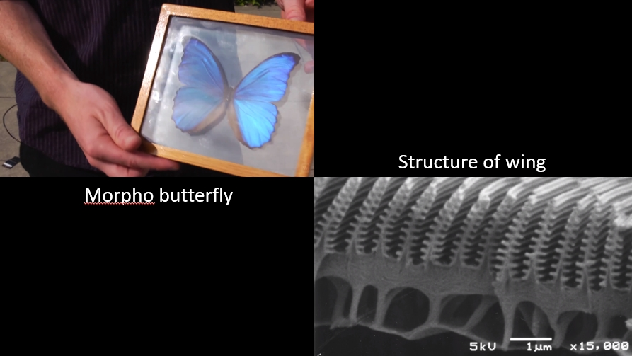

There is a misconception about chameleons that they change their color in order to blend in with their environment. That is actually not the case.
When a chameleon is calm, it is green and so it naturally blends in with its surroundings. But male chameleons change color when they become excited in the presence of a female or a rival male, as shown here.
The first frame is in the bottom right for comparison. As you can see, as he becomes more excited, his color changes to be more yellow, orange and red. So instead of blending in this chameleon will now stand out. But how do chameleons change their color?
For years we thought that there was a simple well-established mechanism for this color change. In their skin, chameleons have different cells containing colored pigments. Some are yellow, others are red and some contain the dark melanin pigment.
Many animals, including chameleons, are known to turn a darker shade, when the melanin to spread out along the of the cell. They turn lighter again, when the pigment back into one spot. It was assumed that chameleons must turn yellow, orange and red in the same way, when pigments to spread out in those cells.
But new research from collaborating groups of physicist and biologists at the University of Geneva shows that this is incorrect. Now the fact that there is actually no green pigment in a chameleon. The green color created by two distinct mechanisms, pigment color and structural color. Under the yellow pigment cells, there are cells containing tiny 130 nm crystals regularly arranged in a lattice. Now light diffracts off these crystals and due to the spacing between them, blue light constructively interferes and is therefore strongly reflected. While the other colors are not reflected.

This is very similar to how a morpho butterfly wing creates an iridescent blue. There is no blue pigment just the periodic nanoscale structure that acts as a strong reflector for only one color.
So a chameleon looks green due to the combination of the yellow light from the pigment plus the blue light reflected off the crystal structure under it. So how do chameleons change this green into yellow orange and red? Well previously it was assumed that the color change was achieved by dispersing pigments in the colored cells.
Now scientists have found it's actually the crystals underneath which are changing. By increasing the spacing between the crystals the chameleons can change which color is selectively reflected. Bigger gaps between the crystals are better at reflecting longer wavelengths. So as the spacing increases, the color changes from blue to green to yellow, and then orange and red.
Scientists compared skin samples from calm green chameleons and excited yellow chameleons and found that indeed, in the excited chameleon the crystal spacing was much further apart. Here you can see a single cell enlarged and the color it reflects changing from blue to green to yellow, orange and red.
Plus, a computer simulation of the light reflected off crystals while their spacing is decreasing also provides excellent agreement with these observations.
Moreover, applying physical pressure to the skin causes the crystals to compress and so they reflect more blue. When that pressure is removed, the crystals expand again reflecting more green light.
The structure of a chameleon’s skin gets even more fascinating, as there is another layer of cells underneath which also contain crystals. But these crystals are larger more spaced out and more disorganized. This means they reflect longer wavelengths in the infrared part of the spectrum and they reflect a broader range of these wavelengths. It’s thought that the function of this layer could be to reflect light from the sun since these chameleons live in bright full-sun habitats.
So male chameleons don't change their color by spreading out red and yellow pigments. Instead they do something much more remarkable. They actively tune the spacing between nanoscale crystals in order to create structural colors that span the whole length of the visible spectrum. Now what I find amazing is that in this day and age we thought we had the answer to how chameleons change color, but it actually took the combined expertise of physicists and biologists working together to figure out what's really going on.